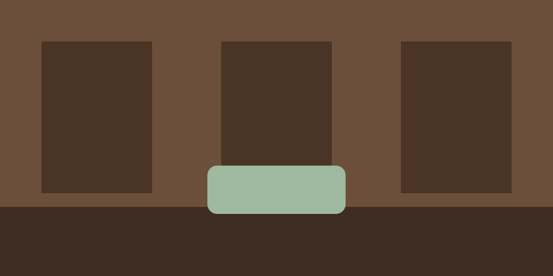

Riverside library adds evening hours and a quiet reading room

Starting next month, the Riverside Public Library will stay open until 9 p.m. on weekdays. The change follows a year of requests from students, shift workers and parents who could only visit after dinner.1
Library director Marcus Hale said the longer hours are paid for by a state grant.
People told us the building closed right when they finally had time to use it,
he said. The grant
also covers two new staff members for the evening shift.
The opening date was June 1 June 15.
A room built for reading
The second floor now has a quiet room with adjustable lighting, large-print books and two desktop magnifiers. Staff can also set up a computer with a screen reader on request.
What’s available
- Large-print and audio books
-
Two video magnifiers
- One with a 24-inch screen
- One portable model you can borrow
- Computers with screen readers, set up on request
It’s the first place in town where I can read for an hour without a headache.
— Ana Ruiz, longtime visitor
Opening hours
| Day | Hours |
|---|---|
| Monday | 9 a.m. – 9 p.m. |
| Saturday | 10 a.m. – 5 p.m. |
| Sunday | Closed |
How to visit
Riverside Public Library210 Water Street
Riverside
Download the schedule  or Close the library (this link does nothing). You can also check the
catalog from home with the library’s free app, or by typing a command like this one:
or Close the library (this link does nothing). You can also check the
catalog from home with the library’s free app, or by typing a command like this one:
library search --title "large print" --branch riverside
--available-only1. Based on a survey of 400 library card holders in March.